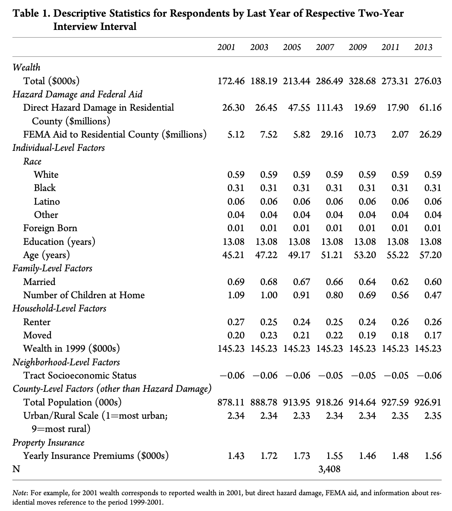

Literature Review of natural hazards damages
This is a draft for our Macro3 presentation. Article : Junia Howell, James R. Elliott, Damages Done: The Longitudinal Impacts of Natural Hazards on Wealth Inequality in the United States, available here.
Summary (paragraph per paragraph)
Introduction
1 - There exists rising wealth inequality. Economic research tries to explain it by (1) income, (2) differential in Return on Investment (RoI), (3) policies. Without rejecting those approaches, this paper tries to use natural hazard damages to explain wealth inequality.
2 - The main reasons to care about the effect of natural hazard on wealth inequalities are :
- its scale : it is very costly.
- its scope : 99,7% of the US counties have been affected by it since 2000.
- its trajectory : with optimistic scenarios, the damages from natural hazards are projected to at least double (or quadruple) in 2050.
3 - Research already showed tha poor people recover less than rich from natural hazard, even in relative terms. Also, research underlines the key role of recovery resources, and not only physical damages received.
4 - Globally, there is a consensus on this literature about the importance of the relationships between natural hazard and pre-existing social inequalities, and not natural hazards alone.
5 - They first do a literature review, then perform an empirical study of the different causes of wealth inequalities, with the dataset from :
- PSID : 1993-2013, individual data.
- SHELDUS : about natural hazard.
- FEMA : about federal help against natural hazards.
Wealth inequality
6 -
They underly the fact that U.S. wealth inequalities have exploded recently, and define three ways of wealth accumulation : 1. Wages in the short term. 2. Investment (linked to RoI) in the long term. 3. Intergenerational transfers at the life term. They point out that wealth has major effect on several other variables, such as (1) education performances, education inequalities, (2) physical health, and (3) emotional well-being. They explain that income and wages have strongly decreased for middle and low wage workes.
7 - About Investment and Long term factors of wealth accumulaition, the authors point out the role of the real estate markets in the increase of inequalities.
8 - Finally, the differences of interest rates on loans have strongly risen, and play a big role in wealth inequality, especially with the 2008 crisis that affected poor people more strongly.
9 - Globally, wealth inequality has strongly icnreased at the extremities of the wealth distribution, and policies have also participated to that.
Natural Hazard and Wealth Inequality
10 - In this paper, they put the focus on natural hazard with physical damage on property and assets, which can be public or private. Historically, they identify the year of 1755, with the earthbreak in Lisboa, as the begin of the development of an answer from the State.
11 - In the US, the insurance against natural hazard from the State begins in the early 1800s, with 1803 tariffs to help victimes of fire damages. In 1811 and 1812, lands are freely given to victims of displacement, and in the 1830s, there exists a de facto policy of federal disaster assistance. In 1950, there is the Disaster Relief Act (DRA), that is the main milestone for the n.h. protection policy in the US. It allows for : 1) Immediate relief (though housing notably) 2) hazard insurance programs 3) rebuilding damaged infrastructure 4) low-interest loans.
12 - Under other institutions, the authors identify the Federal Emergency Management Agency (FEMA), that is responsible for redistribution of money in n.h. cases, and the National Flood Insurance Program (NFIP), the biggest hazard insurer of the US. Also, there is the private sector of insurance.
13 - The author underline the fact that private and public assistance are focused on restoration of property and wealth, which implies differences in recovery rate and quality in function of the initial wealth of the insured people. Notably, the mention that research has found that poor and non-property owners people are more exposed to risks such as : 1) job loss 2) Having to move (displacement) 3) Having to pay a higher rent, 4) Experimenting a decrease in savings.
14 - They mention the fact that in some natural hazards cases, there is often a reduction or a suspension in labor quality protection policies, and they give the example of regulation suspension after Katrina.
Research Design
15 - The authors then present their research design. They use panel data, to study the effect of NH damage on welath distribution. This effect differs in function of considered population, and vary especially strongly when race, education level, and ownership are considered.
16 - The paper also inquires about two main hypothesis : 1) PRivate insurance does not totally prevent increase in wealth inequality from NH damages. 2) the FEMA aid (in net terms) differs in population and contributes to wealth inequality.
Data
17 - The authors now present the used data. THey begin with the Panel Study of Income Dynamics (PSID), a panel dataset that track US families from a “representative sample” from 1968 to now, with information on county and neighbourhood information.
18 - They also use the Spatial Hazard Events and Losses Database (SHELD), that is maintained by the Hazards and Vulnerability Research Institute (HVRI) since 1960 until now. In this dataset, 18 types of natural hazards and their link with (1) fatalities and (2) property damages, are taken into account.
19 - They also make use of the Devennial Census Long form for contextualization.
20 - They finally use the FEMA Projects Summary.
Measurement
Wealth Trajectories
21 - The define Wealth as in the PSID dataset, where it is the sum, at the close family level*, of = - Saving accounts, - Checking accounts, - Real estate holdings, - Equity, - Vehicles, - Farms, - Businesses, - Stocks, - Annuities / IRAs, - Minus all reported debts.
The distribution they get of the wealth is right-skewed, i.e. inflated by the very rich. To work with the data, they : 1) added a “global minimum” to all raw data, to avoid negative values, and the used the squared root to compress the different wealth levels, 2) they transformed the data to get a normal distribution.

Natural Hazard Damages
22 - In the SHELDUS dataset, the natural hazards damages correspond to the “direct damage to (non-crop) property” variable, in dollars. They standardize it to the 2012 U.S. dollar value, and apply the natural log to get the levels of damages.
Other Key Variables
23 - The authors underline the fact that some other key variables have to be taken into account. They identify three main dimensions of social stratification : 1) race (4 mutually exclusive categories : white, black, latino (or hispanic), and “other”), 2) education (in number of total years of school completed, and 3) homeowner status (1 or 0).
24 - To get the private insurance investment, they compute the sum of all premium paid for home and car coverage during the interview year. They do not have more data, although it would be better.
25 - To get the Federal Assistance variable, they sum the non fire related FEMA aid. Here the authors detail a bit the aid asking process. First, when a natural hazard is too big to be handled by the county or the state, they ask the federal authorities. If the President declare the existence of a major disaster, the FEMA then takes action and does money transfers and other kinds of help, such as : financial help, temporary housing, house voucher, uninsured personal needs, and even direct replacement of private property sometimes.
Control Variables
They also include several control variables, at three main levels : the individual, the neighhorhood, and the population.
26 - The individual level variables are : age, foreign birth, marital status, and number of children under 18 years old who are living within the household, and if the individuals have moved in the last two years.
27 - The variables at the neighborhood level are : the median income of the neighborhood, the number of adults with at least a bachelor degree, and the number of adults currently employed.
28 - Finally, the variables at the population level are the total population, and the ubran-rural variable from 1 to 9.
Sampling and Modeling
29 - Historically, the choice of following the “head of the household” led to only men in the samples, which biased the data from the difference in marital status.
30 - THe author did run one model per gender in the household, but due to very similar results, they only present the female model with at least four over seven interviews.
31-32 - Econometrics things.
Results
32 -